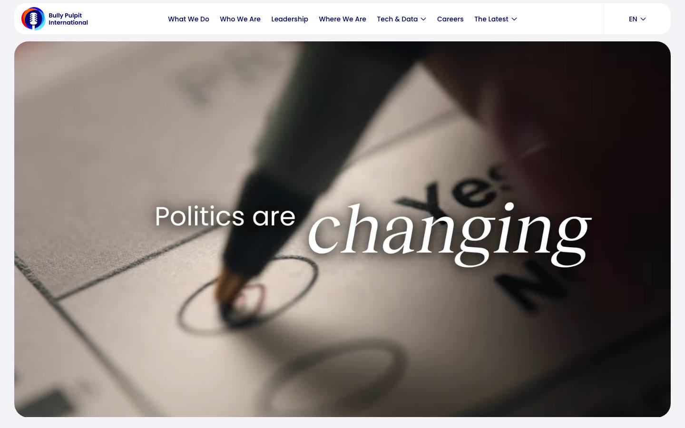
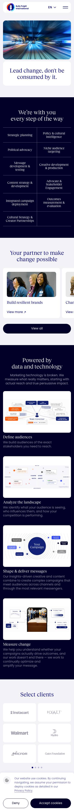
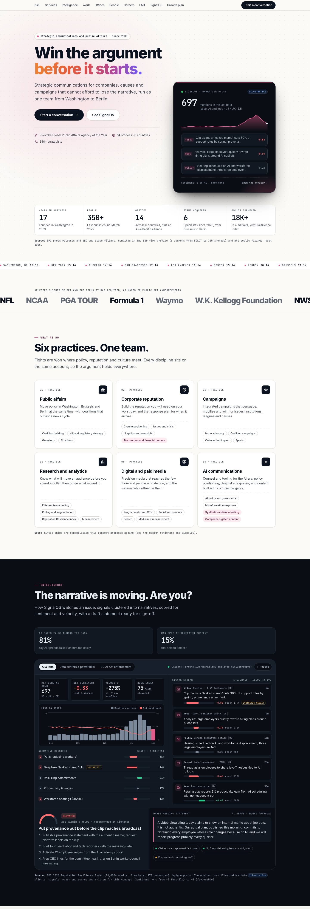
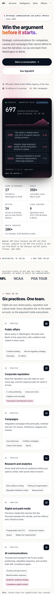

Public affairs
Move policy in Washington, Brussels and Berlin at the same time, with coalitions that outlast a news cycle.
Coalition buildingHill and regulatory strategyGrasstopsEU affairs
Strategic communications and public affairs · since 2009
Strategic communications for companies, causes and campaigns that cannot afford to lose the narrative, run as one team from Washington to Berlin.
Source: BPI press releases and public filings, compiled in the BSP firm profile and BPI public filings, Sept 2026.
Selected clients of BPI and the firms it has acquired, as named in public BPI announcements
Selected clients: NFL, NCAA, PGA TOUR, Formula 1, Waymo, W.K. Kellogg Foundation, NWSL, IOC, ICC.
Before and after
bpimedia.com as captured on October 8, 2026, beside this concept. Scroll inside a frame to see the whole page.
Before The site today


After This concept


Source: Before screenshots of bpimedia.com, October 8, 2026; BPI growth plan (analyst estimates), October 2026.
What we do
Fights are won where policy, reputation and culture meet. Every discipline sits on the same account, so the argument holds everywhere.
Move policy in Washington, Brussels and Berlin at the same time, with coalitions that outlast a news cycle.
Build the reputation you will need on your worst day, and the response plan for when it arrives.
Integrated campaigns that persuade, mobilize and win, for issues, institutions, leagues and causes.
Know what will move an audience before you spend a dollar, then prove what moved it.
Precision media that reaches the few thousand people who decide, and the millions who influence them.
Counsel and tooling for the AI era: policy positioning, deepfake response, and content built with compliance gates.
Note: tinted chips are capabilities this concept proposes adding (see the design rationale and SignalOS).
Intelligence
How SignalOS watches an issue: signals clustered into narratives, scored for sentiment and velocity, with a draft statement ready for sign-off.
Source: BPI 2026 Reputation Resilience Index (18,000+ adults, 4 markets, 170 companies), bpigroup.com. The monitor uses illustrative dataillustrative: clients, signals, reach and scores are written for this concept. Sentiment runs from −1 (hostile) to +1 (favourable).
SignalOS
SignalOS packages reading the room, testing the message and measuring the result into a subscription.
Work
Four illustrative engagements showing how the practices combine. Names and results are written for this concept.
A coalition of utilities and manufacturers needed transmission permitting reform through a divided Congress. We mapped the 38 members who would decide it, tested 40 messages with elite audiences, then ran paid, earned and grasstops programs in their districts.
A generated “leaked memo” claimed a global employer was replacing thousands of roles with AI. SignalOS flagged the clip on a creator account; within six hours the client had published the authentic plan, briefed reporters and put employee voices in the feed.
A US portfolio company faced EU AI Act scrutiny while Washington framed enforcement as a trade fight. One team in DC, Brussels and Berlin published a plain-language transparency summary in three languages and lined up academic and SME validators.
A professional league faced congressional letters, player criticism and sponsor questions at once. We built a governance reform narrative with independent voices, sequenced announcements around the season, and gave sponsors a briefing pack before the press.
Offices
Policy moves in more than one capital. Teams in Washington, London, Brussels and Berlin work the same accounts.
Arcs from Washington headquarters · Sydney through the Mandala Partners alliance (off map) · local times update live
People and culture
Built by people who ran presidential campaign communications. Firms that joined since 2023 added Europe, research, sports and culture.
Andrew Bleeker
Chief Executive Officer
Founded BPI in 2009
Ben LaBolt
President
President since Apr 2025
Elizabeth E. Alexander
Partner, Litigation Communications, Oversight and Regulatory Risk
Joined Mar 2026
Dave Whiting
Partner, Boston and the Northeast
Joined Aug 2026
Mark Jones
Leads sports strategy and growth
Joined with Agado, May 2025
Michael Hayman
Co-founder, Seven Hills (London)
Joined BPI Nov 2024
Source: leadership as named in public BPI announcements, BSP firm profile, Sept 2026. Monograms stand in for portraits.
Win, don’t just message.
Success is measured in votes, rulings, deals and trust, not impressions.
Data before adjectives.
Every recommendation starts with what the audience actually believes.
One team, every channel.
Strategy, research, creative and media sit on the same account.
Speed with sign-off.
Campaign tempo, with the legal and compliance rigor corporate clients need.
Careers
Strategists, researchers, creatives and engineers in eleven cities. Openings are illustrative.
Transatlantic rotations
Spend a quarter in London, Berlin or Brussels on a live account.
AI tooling for every seat
SignalOS, research copilots and drafting tools, with training to match.
Cycle-proof careers
Corporate, campaign and international work, so growth does not wait for an election.
FAQ
Or ask the BPI desk with the Ask button; it answers from the same facts.
Why it is built this way
The qualities buyers of a communications firm pay for, and the KPI each should move.
Price the work like advice, not like a project agency
Show the monitoring working, not described
Statement, payoff and one ownable mark
Qualified inbound inquiries a month
Contact form and chat handoffs, by practice and region
SignalOS demo to briefing rate
Monitor interactions that become a briefing request
Retainer share of new mandates
Growth plan target about 55% of net revenueest.
Europe share of inbound
Toward about 30% international revenueest.
Source: design review of strategic-comms and public-affairs sites, Oct 2026. Targets: BPI growth plan (retainer mix and international mix levers), analyst estimates.
Contact
Tell us what is at stake. A partner in the right practice and time zone will come back to you, usually the same business day.
Washington, DC headquarters · 1445 New York Ave NW, 5th Floor
SignalOS turns monitoring, testing and measurement into a retainer. The plan shows what it is worth at exit.